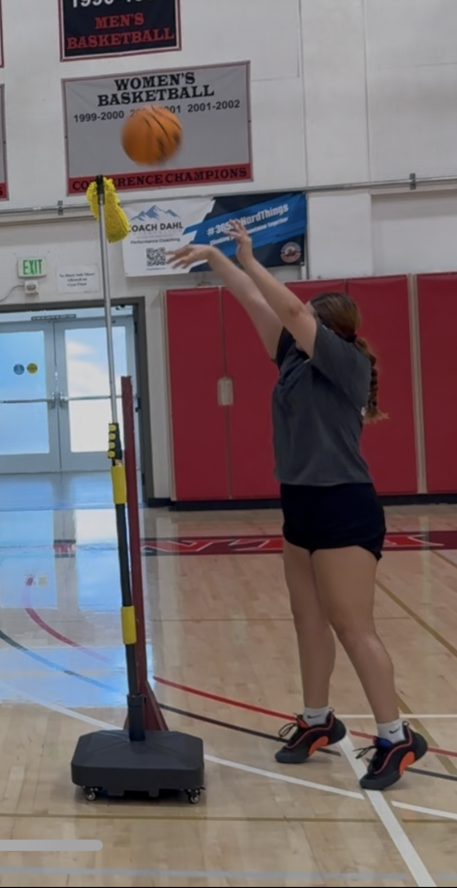
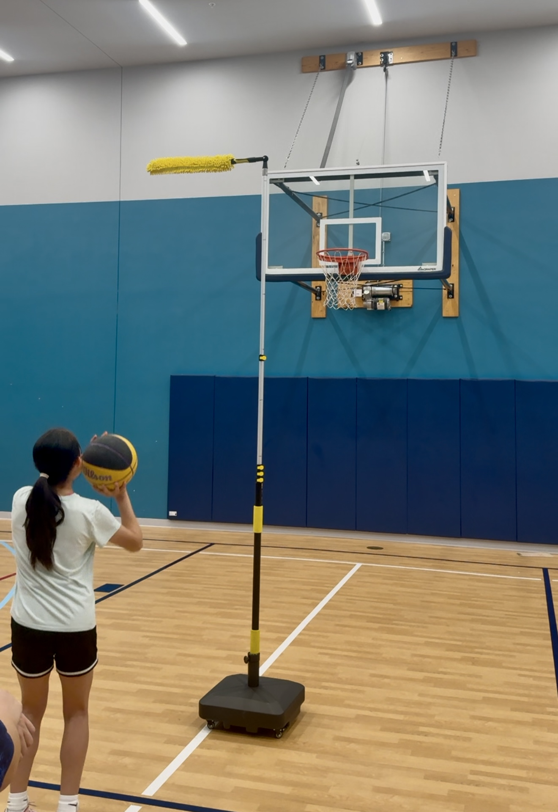
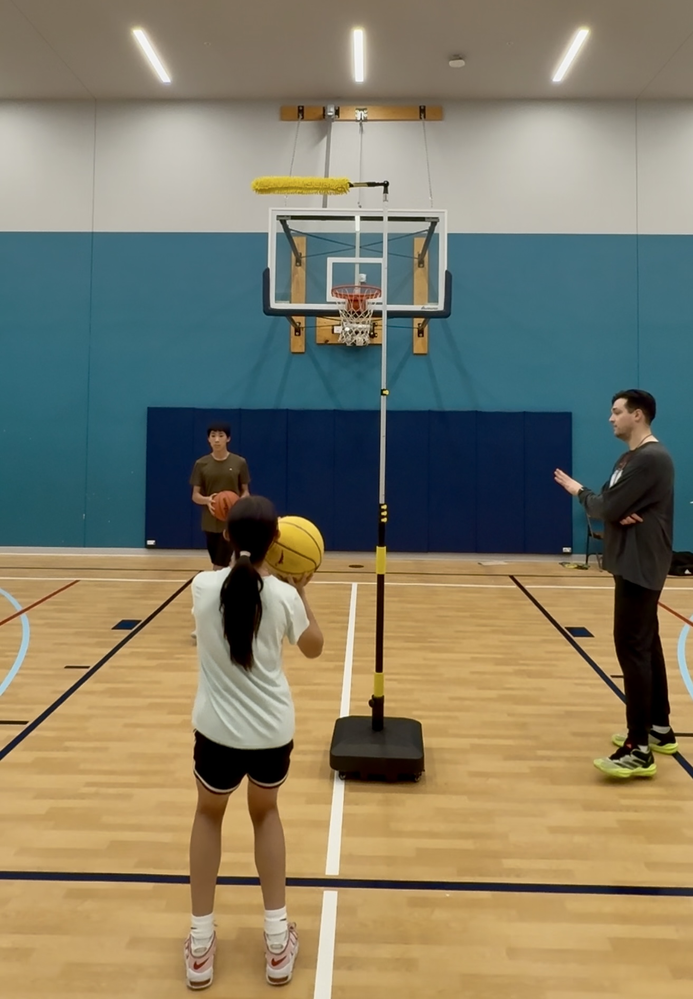
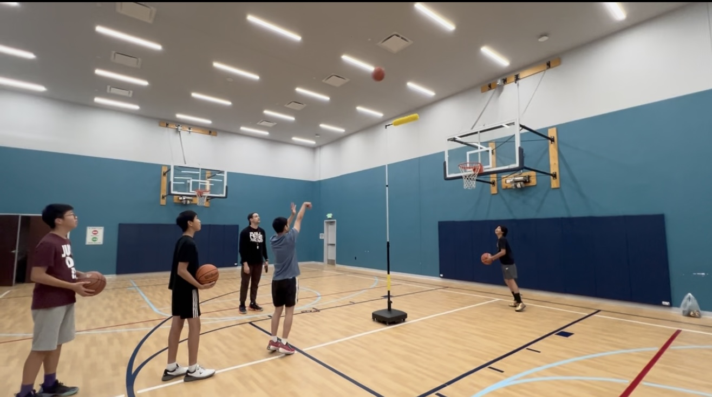
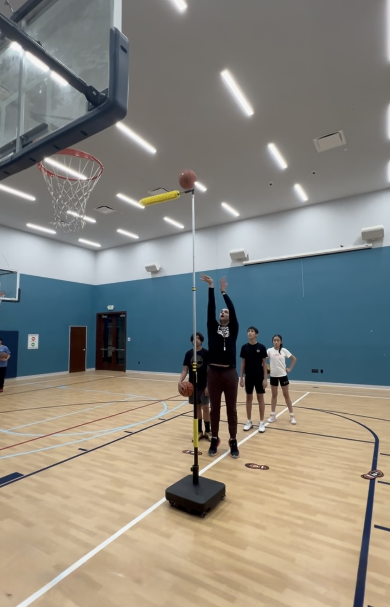
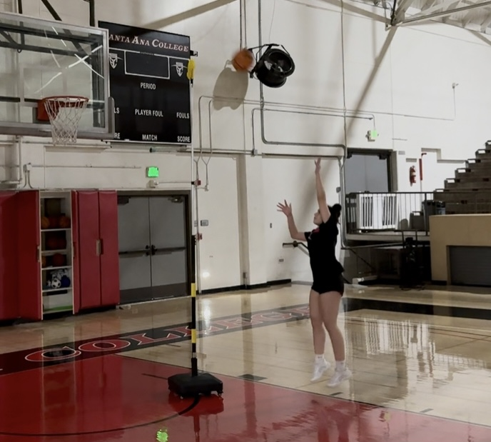

Tool Overview
A visual system for helping players understand shot path, placement and touch.
Player Development Innovation
The Archer is a shooting-development framework built around arc, release point, rhythm, touch and contested-shot preparation. These visuals show how the tool supports teaching, demonstration and repeatable training standards.

Training Framework
A visual system for helping players understand shot path, placement and touch.
Close-placement visuals support simple teaching language and repeatable release targets.
Arc comparison images help players see the difference between flat shots and high-quality trajectory.
Release visuals reinforce hand position, apex point and ball path awareness.
The framework can support close-contest preparation without turning the shot into a rushed rep.
Free throw, floater and hook-shot visuals create practical teaching examples.
The tool can progress from stationary placement to touch shots and contested-shot preparation.
Visual Gallery









Video Gallery